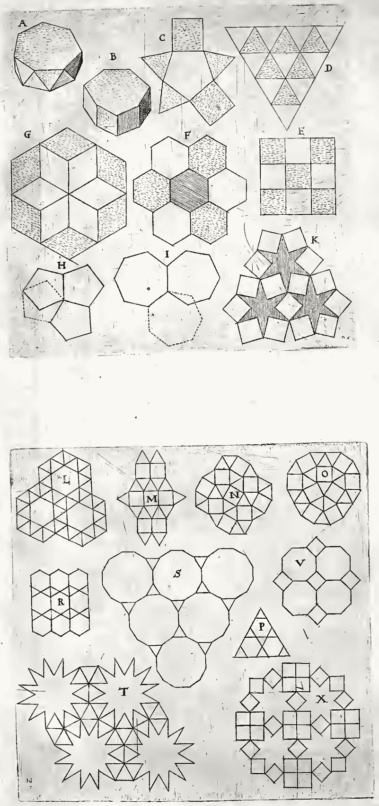

Propositio XIX — Sex Modi Impletionis Plani Ex Duabus Speciebus¶
XIX. Propositio.
Ex planis duarum figurarum impletur locus planus sexies; bis ex quinque, semel ex quatuor, ter ex tribus angulis.
Sena enim plana coire non possunt, ut eorum unius angulus sit major Trigonico: quia primi Trigonici quantitas est duae tertiae unius recti; itaque hoc sexies sumptum facit 12 tertias, seu 4 rectos. Uno igitur horum 6 majori existente, ut scilicet fit fi-
f. 0070 · p. 52gura plurilatera, superantur 4 recti: et tunc planities non sternitur, per XVI hujus.
Quina verò plana tunc coëunt, si quatuor Trigonicis jungatur unus, aequans duos Trigonicos, talis verò est Hexagonicus; forma qualis literâ L.
Vel si tribus trigonicis duo tetragonici jungantur; quia aequant tres alios trigonicos. Forma qualis in M, vel qualis in N, scilicet continuè uniformis; vel denique, qualis in O, difformis continuationis.
At si Trigonicis duobus, Tetragonicos tres sumpseris, ii jam quatuor rectos superabant: multò magis si majores duo accesserint anguli ad duos trigonicos.
Quaterna verò duorum specierum coëunt, si Trigonicis binis, jungantur bini Hexagonici. Forma qualis in P, vel qualis in R.
Aliter utcunque copulaveris quaterna: semper vel plus efficies, vel minus quàm quatuor rectos; eoque locum planum non sternes.
Ternòs igitur si jungamus, caventes, ne sint plures quàm duae species; primùm non poterunt esse duo Trigonici, nec duo Tetragonici, non superarent enim duos rectos, et relinqueretur pro tertio, quod nullus unus et solus implet.
Uno verò inter ternos Trigonico posito, congruunt duo Dodecagonici: estque continuatio possibilis; nec admiscentur alii concursus. Forma hujus planiciei videatur literâ S.
Huc refer stellam Dodecangulam, ex eo fundamento, quòd ejus angulus cavus aequat Trigonicum: itaque dividuus est Dodecagonus in stellam et 12 Trigonos; Ergò quinque Trigonici et duorum Radii duarum stellarum coëunt: forma continuabilis, spectetur literâ T.
Et uno Tetragonico inter ternos assumpto, congruunt duo Octogonici, estque continuabilis et haec forma: videatur literâ V.
Huc refer stellam Octogonicam, ex eo fundamento, quòd ejus angulus cavus aequat Tetragonicum: itaque dividuus est Octogonus in stellam et octo triangula Tetragonica, quorum duo efficiunt Tetragonum. Et sic Tetragonici tres et duarum stellarum radii duo, implent locum: forma mixtâ, ut literâ X: vel aliter etiam mixtâ, ut literâ Y.
Dimissis jam in ternis coaptandis, Trigonico et Tetragonico, si ad Pentagonicum veniamus, eorum possunt sumi duo, quia superant juncti 2. rectos: et congruit in locum reliquum Decagonicus unus: coronatur enim Decagonus Pentagonis decem: sed non continuatur purè haec forma. Vide Schema literâ Z interius.
Huc ergò refer stellam Pentagonicam, cùm sunt Pentagonici tres, et unius stellae radius; quia cavus stellae angulus capit etiam unum angulum pentagonicum, non minùs, quàm Pentagonicorum trium hiatus, capit radium stellae. Vide eâdem literâ Z exterius.
Quamquam ne sic quidem continuatio succedit in infinitum; est enim insociabile hujus sectae regnum, quà paucis suorum adscitis, statim se munit: Ecce formas has duas etiam aliter, literâ Aa.
Quòd si continuare omninò velis, monstra quaedam sunt adsciscenda, duo Decagoni inter se commissi, exsectis in utroque binis lateribus; fitque series structura quinquangula etiam infinitâ continuatione, sic ut in primâ et angustissimâ quinquangulari serie sint Decagoni quinque, nullum monstrum intermedium: In secundâ laxiori, series lineares Decangulorum mediant singula
f. 0071 · p. 55loca occupant singulae copulae ex binis Decagonis inter se commissis, quas mediat Decagonus unus: In quartâ stant rursum integri Decagoni in angulis, mediantque binos angulos bini Decagoni, dispositi aequalibus intervallis: In quintâ stant stellae cum singulis extremis radiis in singulis angulis, implent verò lineas bini Decagoni integri, et in medio, binae commissurae Decagonorum. Et sic consequenter, unaquaelibet forma quinquangula fert novi aliquid. Structura est laboriosissima et artificiosissima, visenda ad eandem literam Aa.
Huc etiam refer stellam Decangulam, in cujus cavum angulum congruit angulus Pentagoni; et vicissim radii bini Trideciles, cum binis Pentagonicis congruunt et implent locum planum. Haec forma recipit inaequales Pentagonos: Et licèt sit continuabilis, recipit tamen in medium vacuos Decagonos hiulcos. Forma est visenda literâ Bb.
Pentagonus unus in ternorum planorum copulam assumi non potest, nam ejus angulus habet sex quintas unius recti, per XXXIII. Lib. I: ergò angulis duobus reliquis relinquerentur 14 quintae, cuilibet 7 quintae; qualem nulla figura habet. Nec sumi possunt Hexagoni duo: nam residuum est etiam Hexagoni angulus, et fit forma superius relata, cùm nos hic quaeramus structuras ex duabus speciebus, non ex unicae speciei figuris. Per sequentes plurilateras figuras, quarum angulus major est Hexagonico, subtractis duobus angulis à 4 rectis, relinquitur pro reliquo minus, quàm habet Hexagonicus: uno verò subtracto, minus relinquitur pro duobus reliquis, quàm habent duo Hexagonici. Atqui de iis figuris, quae pauciores et minores habent angulos, quàm Hexagonus, jam anteà transactum nobis est, quae et quot esse possint, quando terni sternunt planitiem.
f. 0076 · Tabula A–X
